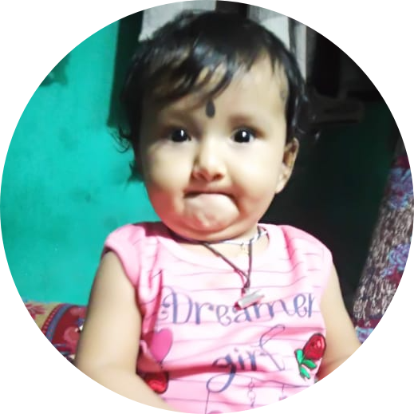

|  | Debasish PandaDefence Aspirant Of UPSC . I am a Defence Aspirant student preparing for CDS and AFCAT examination which will held on 2021. |
| Dates | Colleges |
|---|---|
| 2018-2020 | B.tech in CSE from TAT under B.P.U.T . |
| 2016-2018 | Intermediate: Board of CBSE from Sri Chaitanya Vidya Niketan,Visakhapatnam. |
| 2015-2016 | 10th from CBSE Board from KV No.3,Bhubaneswar-17,Odisha. |
| C Language | 🌟🌟🌟🌟🌟 |
| Core Java | 🌟🌟🌟🌟🌟 |
| Web Development | 🌟🌟🌟 |
| Painting | 🌟🌟 |